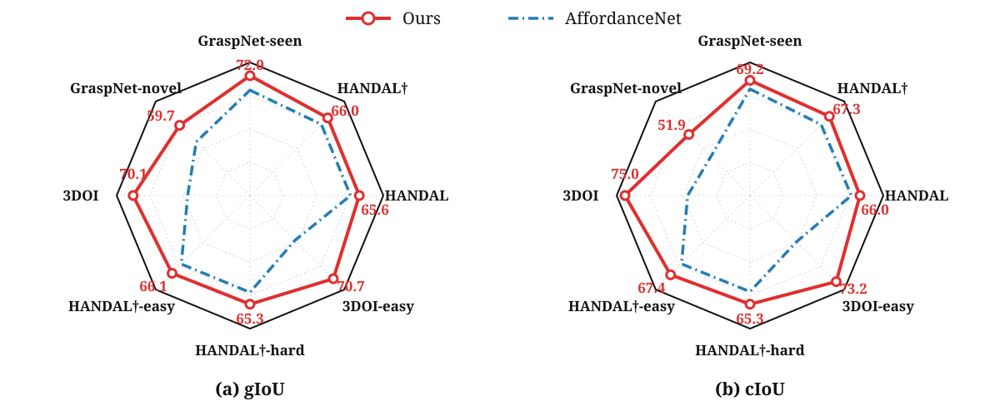
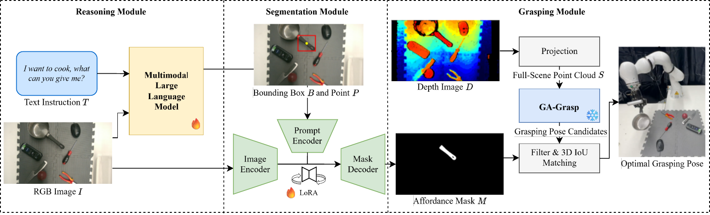
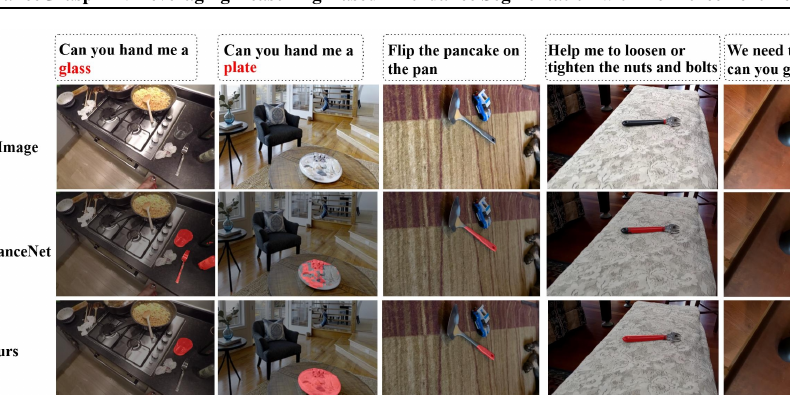
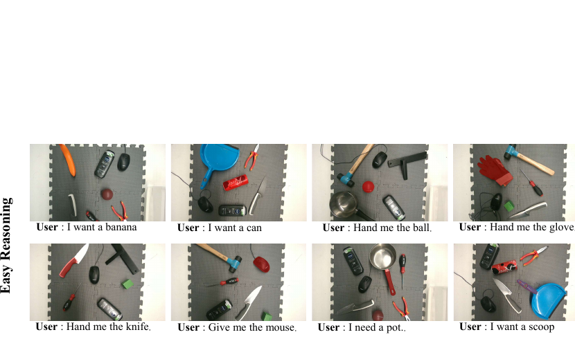

Interprets the instruction and predicts spatial prompts through structured multimodal reasoning.
TRO 2026 · Project Page
Affordance
Grasp-R1
Chain-of-Thought-Guided Multimodal Large Language Model with Reinforcement Learning for Affordance Grasping
Reason over language, localize functional object regions, and convert affordance understanding into executable 6-DoF grasps.
01 Benchmark profile

66.7 / 65.9Average gIoU / cIoU
80%Easy-instruction grasp success
72%Hard-instruction grasp success
3 modulesReason · Segment · Grasp
01 · Motivation
From semantic intent
to physical action.
Affordance segmentation is crucial for bridging visual perception and robotic manipulation, yet existing Vision–Language Models (VLMs) struggle to align 3D object geometry with the semantic intent of complex grasping instructions due to limited structured reasoning capabilities. We introduce AffordanceGrasp-R1, a reasoning-driven affordance segmentation framework for robotic grasping that combines a chain-of-thought (CoT) cold-start strategy with reinforcement learning to enhance deduction and spatial grounding. In addition, we redesign the grasping pipeline to be more context-aware by generating grasp candidates from the global scene point cloud and subsequently filtering them using instruction-conditioned affordance masks. Extensive experiments demonstrate that AffordanceGrasp-R1 consistently outperforms state-of-the-art (SOTA) methods on benchmark datasets, and real-world robotic grasping evaluations further validate its robustness and generalization under complex language-conditioned manipulation scenarios.
02 · Method
One interpretable pipeline.
Three specialized modules.

Turns box and point prompts into an instruction-conditioned affordance mask.
Generates full-scene candidates and selects a feasible pose with mask-guided 3D matching.
03 · Evidence
Results that hold across
datasets and instructions.
The model is evaluated on HANDAL, GraspNet, and 3DOI, including unseen objects and language that requires functional part reasoning.
Main benchmark01

Reasoning prompts02

Why it works03
Think→Ground→Grasp
Language reasoning stays explicit while perception and grasp generation remain modular and verifiable.
04 · Real robot
Twenty trials.
Two instruction regimes.
Zero-shot grasping with a KUKA LBR iiwa R820, Robotiq 2F-85 gripper, and eye-in-hand Intel RealSense D455. The most visible row plays automatically at 2× speed.
05 · Citation
Build on the work.
@article{zhou2026affordancegraspr1,
title = {AffordanceGrasp-R1: Chain-of-Thought-Guided Multimodal Large Language Model with Reinforcement Learning for Affordance Grasping},
author = {Zhou, Dingyi and He, Mu and Fang, Zhuowei and Yao, Xiangtong and Liu, Yinlong and Knoll, Alois and Cao, Hu},
journal = {arXiv preprint arXiv:2602.03547},
year = {2026}
}